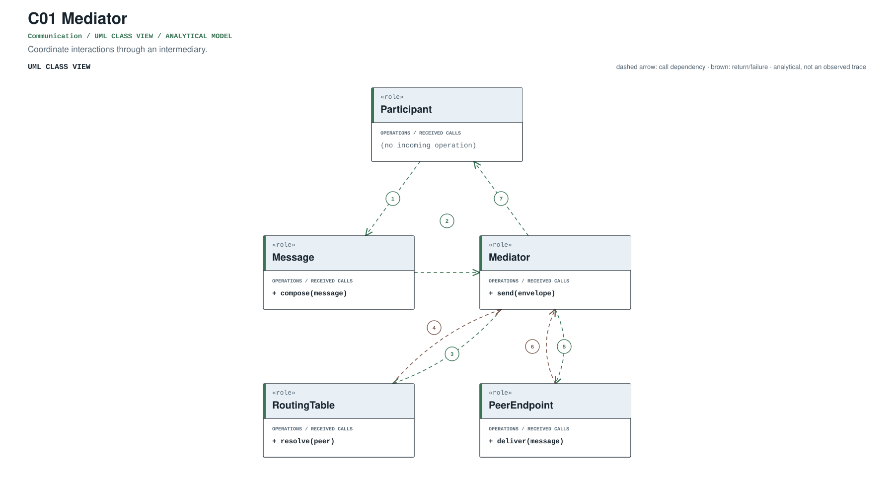
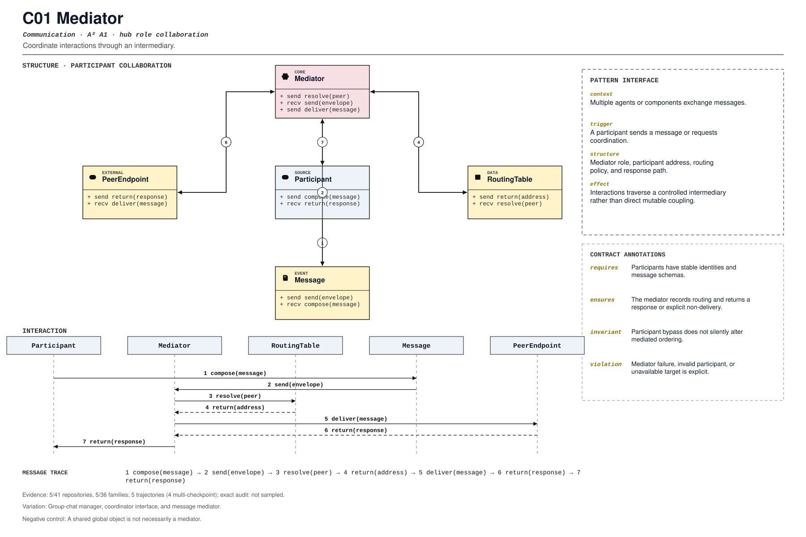

PROMPT SKETCH
Route participant messages through a mediator with stable identities and schemas. The mediator must record the routing decision and return a response or an explicit non-delivery.Coordinate interactions through an intermediary.
participant_interaction_coordinationRECORD STATUSCandidate · v0.1.0The proposed contract drawn as participant roles, received calls, and numbered dependencies.

The same roles and calls as a class collaboration and a numbered message sequence.

Where the mechanism applies. All four dimensions belong to the proposed match, not just its vocabulary.
The obligation that clients, operators, and auditors should be able to rely on.
A shared global object is not necessarily a mediator.
The hot spot is admitted only where the protected semantics survive.
Group-chat manager, coordinator interface, and message mediator.
Test routing, invalid recipient, failure, and participant isolation.
Did coordination move into a typed manager or service boundary?
An illustrative prompt and a small design sketch for the proposed contract. Names and APIs are invented; this is not a repository excerpt.
Route participant messages through a mediator with stable identities and schemas. The mediator must record the routing decision and return a response or an explicit non-delivery.def mediate(message, participants):
route = router.resolve(message.recipient, participants)
if route is None:
return NonDelivery(message.id, reason="unknown recipient")
response = route.send(message)
log.record(message.id, route.id, response.id)
return responseIllustrative design sketch. The mediator owns routing evidence; direct side channels defeat the pattern. This example is a teaching aid, not implementation evidence or a conformance claim.
The frozen rule that retrieves this record, the canonical source exemplar, and the control that should stay unmatched.
participant_interaction_coordination(?i)\b(?:mediator|message[_-]?mediator|coordination[_-]?interface)\bFrozen expression, v0.1.0. A match is a retrieval cue, not a confirmed implementation.python/packages/autogen-agentchat/src/autogen_agentchat/teams/_group_chat/_base_group_chat_manager.py:25Support: python/packages/autogen-agentchat/tests/test_group_chat.py:1Scope-anchored review. pohe-agent analyze <repo> --pattern C01 anchors the cue to its enclosing declaration and checks a separate operational signature for all four pointcut dimensions. Missing roles and negative-control risks remain visible; a structural match is not E2/E3. Calibration report ↗
Up to five public files retrieved by the frozen cue and pinned to the examined commit. A match is a place to inspect, not a confirmed implementation.
python/packages/autogen-agentchat/src/autogen_agentchat/teams/_group_chat/_base_group_chat_manager.py:25CANONICAL SOURCE02aaif-goose/goosedocumentation/blog/2025-12-04-mcp-sampling/index.md:72RETRIEVAL CUE03continuedev/continuedocs/docs/languages/vb.net.md:42RETRIEVAL CUE04pydantic/pydantic-aitests/graph/builder/test_graph_execution.py:397RETRIEVAL CUE05QwenLM/qwen-codedocs/design/2026-05-27-daemon-workspace-service-design.md:266RETRIEVAL CUEEach layer answers a different question. Do not substitute retrieval for review.
A concrete source anchor is available for this proposed record. It is one exemplar, not evidence that all repositories—or every contract field—conform.
Review boundary: this candidate and its specification come from an AI-assisted study. Independent human validation remains open.
13.9% of repository families in the frozen panel have at least one current cue, historical cue, or canonical source layer. This is not confirmed prevalence.
Current lexical-cue repositories: 3 / 41d07c667a3239python/packages/autogen-agentchat/src/autogen_agentchat/teams/_group_chat/_base_group_chat_manager.py:25python/packages/autogen-agentchat/tests/test_group_chat.py:1Group chat manager mediates participant messages.
(?i)\b(?:mediator|message[_-]?mediator|coordination[_-]?interface)\bThis expression is a discovery instrument only. A match is a retrieval cue—not a confirmed implementation, pointcut match, or contract proof.